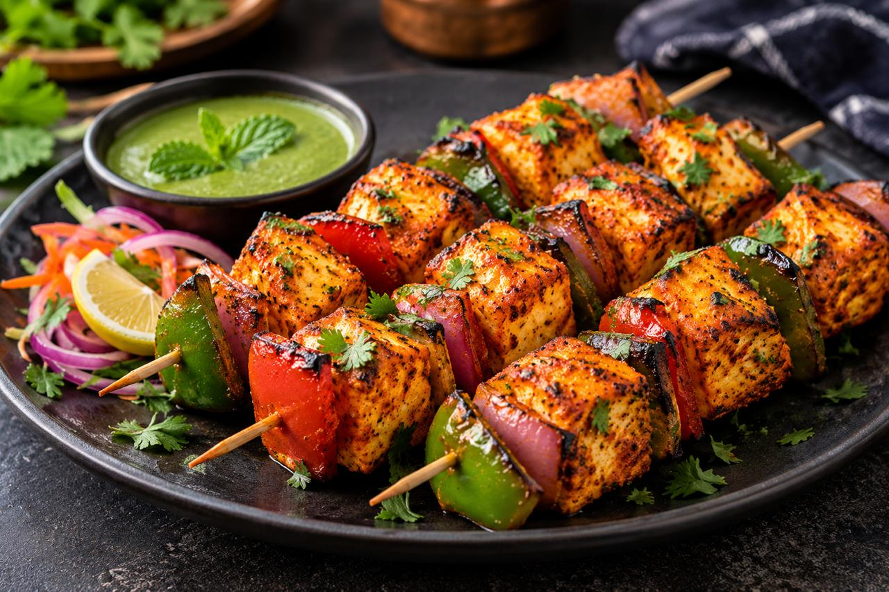
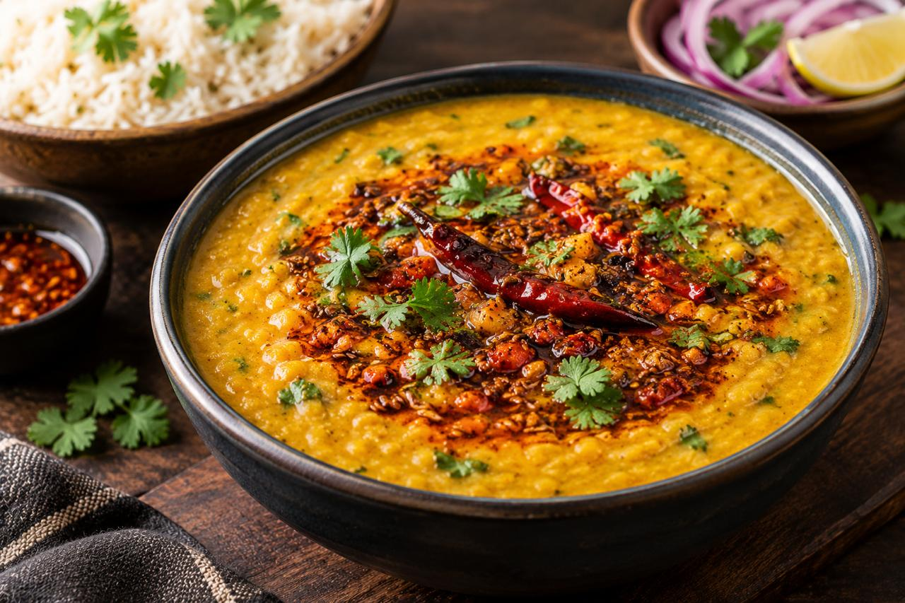
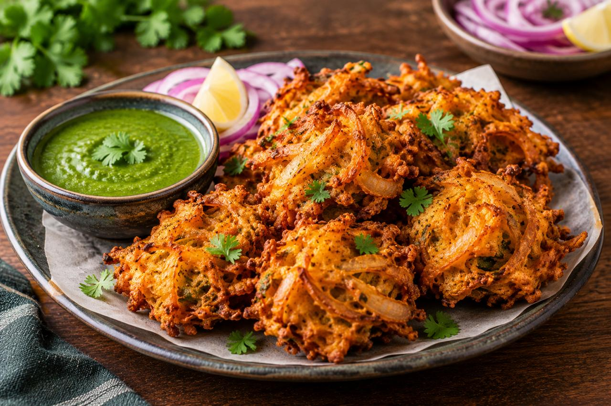
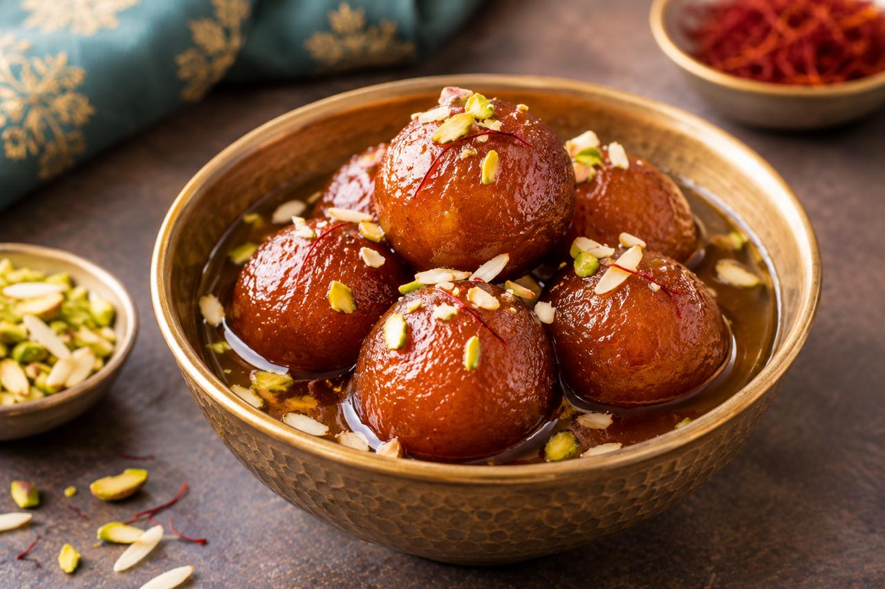
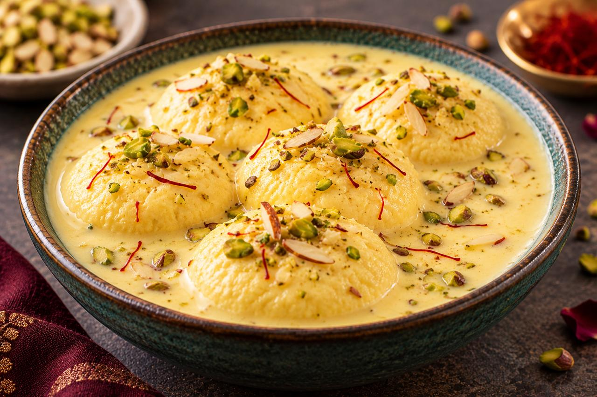
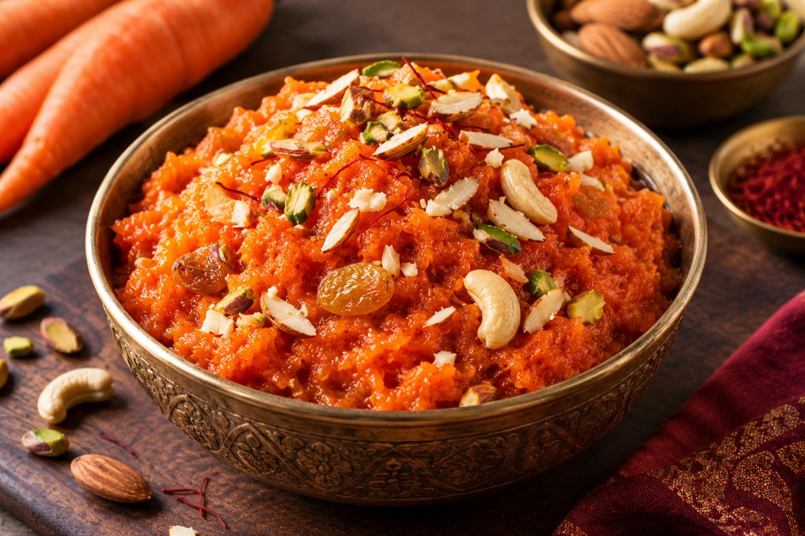

Butter Chicken
45 mins
12.5K views
850 likes

Paneer Tikka
30 mins
9.8K views
720 likes

Dal Tadka
35 mins
82K views
640 likes

Aloo Paratha
25 mins
75K views
590 likes
Masala Dosa
40 mins
152K views
1.2K likes

Chapathi Roll
25 mins
114K views
920 likes
Afghani Paneer
20 mins
67K views
480 likes
Samosa
35 mins
105K views
810 likes
Paneer Pakora
20 mins
59K views
430 likes

Onion Bhaji
25 mins
48K views
370 likes

Gulab Jamun
30 mins
146K views
1.1K likes
Chicken Tandoori
35 mins
71K views
520 likes
Sambar
25 mins
9.2K views
690 likes

Rasmalai
40 mins
8.6K views
610 likes

Carrot Halwa
45 mins
63K views
470 likes

CHicken Biriyani
20 mins
54K views
390 likes